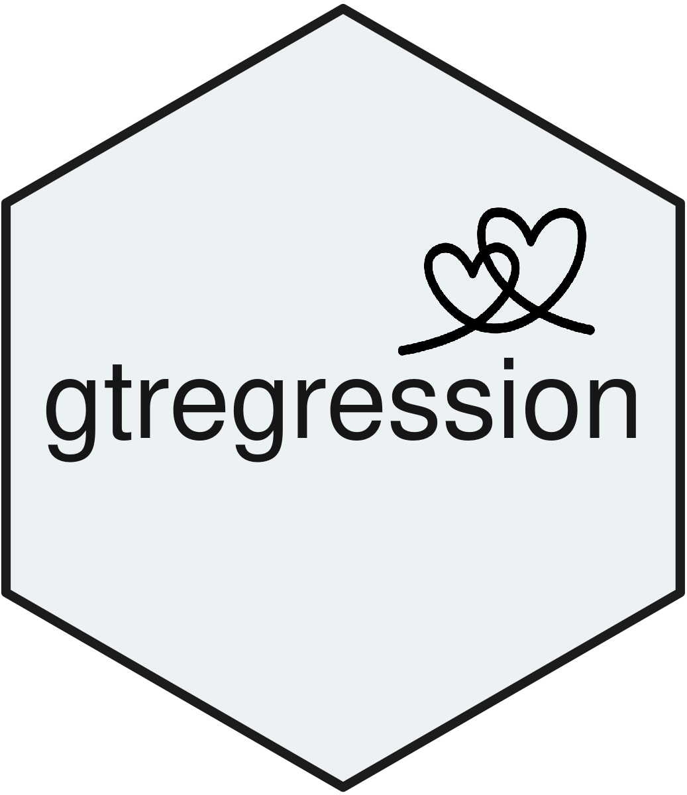

R package for health research
gtregression
From model to manuscript. Fit regression and survival models, and get tables, forest plots and survival curves ready for your paper, without hand-formatting a single coefficient.
install.packages("gtregression")

What you can make
New in 1.2.0
Risk difference and NNT risk_difference() reports absolute risks, the risk difference and NNTB/NNTH, crude or adjusted.
More study designs Matched case-control, multilevel, ordinal, multinomial and competing-risk regression tables.
Richer survival tools Proportional-hazards plots, delayed entry, clustering, weights and adjusted survival curves.
Better merging Merge any number of tables, keep each block’s notes, and choose a table theme.
From data to manuscript
04
Interpret
Check assumptions, confounding, interaction and fit.
check_ph() compare_models() A defensible model
A five-minute example
library(gtregression)
library(dplyr)
data("data_birthwt", package = "gtregression")
birthwt <- data_birthwt |>
mutate(
race = factor(race, levels = c(1, 2, 3), labels = c("White", "Black", "Other")),
smoke = factor(smoke, levels = c(0, 1), labels = c("No", "Yes")),
ht = factor(ht, levels = c(0, 1), labels = c("No", "Yes")),
low = factor(low, levels = c(0, 1), labels = c("Normal BW", "Low BW"))
)
attr(birthwt$smoke, "label") <- "Smoking during pregnancy"
exposures <- c("age", "lwt", "race", "smoke", "ht")
# Baseline characteristics by outcome
desc <- descriptive_table(birthwt, exposures = exposures, by = "low",
show_dichotomous = "all_levels")
# One model per exposure, then one adjusted model
crude <- uni_reg(birthwt, outcome = "low", exposures = exposures, approach = "logit")
adjusted <- multi_reg(birthwt, outcome = "low", exposures = exposures, approach = "logit")
# One table for the paper, and a forest plot
table_2 <- merge_tables(desc, crude, adjusted,
spanners = c("Low birth weight", "Crude", "Adjusted"))
forest <- forest_reg(forest_df(crude, adjusted))
# Save
save_table(table_2, filename = "table-2", format = "docx")
save_forest(forest, filename = "forest-plot", format = "png")Variable labels set with attr(x, "label") or labelled::var_label() appear in every table and plot. Each result keeps its fitted models (adjusted$models) and table data (adjusted$table_body), so nothing is hidden.
Find your way
Describe dataBaseline tables with row or column percentages.
Regression tablesLogistic, risk ratio, count, linear and Firth models.
Special designsMatched, multilevel, ordinal, multinomial and competing risks.
Survival analysisKaplan-Meier, Cox, parametric models and predictions.
Risk difference and NNTAbsolute effects for two-group comparisons.
Stratified analysisThe same model within each subgroup.
Confounding and interactionScreen confounders and test effect modification.
Causal mediationDirect and indirect effects with clear caveats.
DiagnosticsConvergence, collinearity, fit and model comparison.
VisualiseRegression plots, forest plots and survival curves.
Merge and customiseCombine tables, apply themes, style with flextable.
Built on trusted R packages
gtregression is a readable interface over established packages: stats, survival, MASS, risks and logistf fit the models; broom, sandwich and lmtest handle inference; flextable, officer and gt build the tables; ggplot2, patchwork and forestploter draw the figures. The fitted models stay inside every result, so each number can be traced back to its source.
Install
# CRAN
install.packages("gtregression")
# Development version
remotes::install_github("ThinkDenominator/gtregression")Citation
If you use gtregression in your work, please cite it as:
Polani R, Eliyas SK, Sakthivel M, Kaviprawin M, Krishnamoorthy Y, Majella MG. gtregression: Tools for Creating Publication-Ready Regression Tables. Zenodo. https://doi.org/10.5281/zenodo.16905349